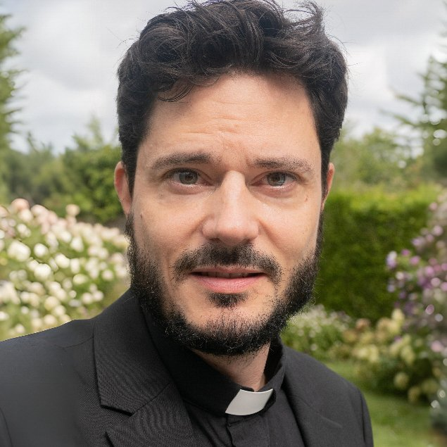
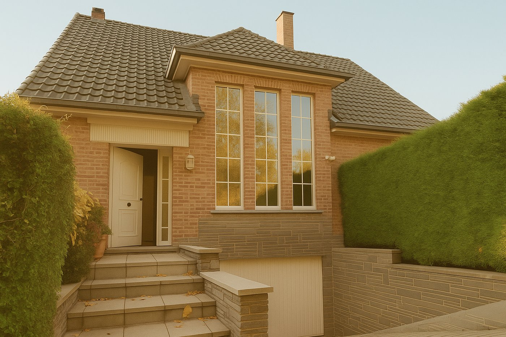
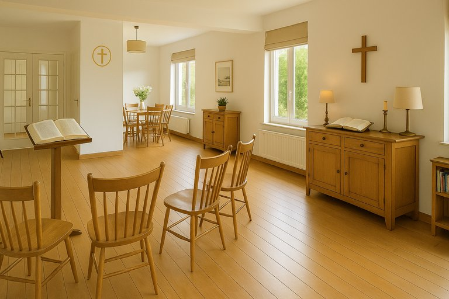
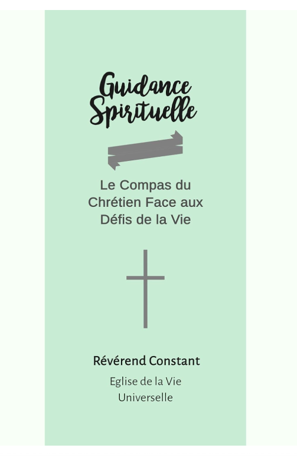

Pasteur baptiste, engagé.

Portrait du Pasteur — à insérerNé en Belgique en 1980, marié et père de famille, mon parcours me permet de comprendre les joies et les défis que nous traversons tous : issu d'une famille de pasteurs et diplômé de la célèbre Christian Leaders Institute en 2022, je mets mon engagement au service de chaque chrétien.
La foi s'exprime de multiples façons. C'est pourquoi l'accompagnement proposé est ouvert à tous, que votre pratique soit régulière ou que vous ayez besoin d'un service religieux pour une étape de votre vie. En Belgique, où le nombre de pasteurs est limité, j'essaie d'apporter une présence religieuse et de répondre aux besoins de chaque Croyant.
Des services sont proposés pour les moments importants de votre vie — mariages, baptêmes, funérailles, cours de membres — ainsi que des guidances spirituelles adaptées à vos demandes spécifiques. Fort d'une expertise théologique et d'une approche rigoureuse de la Bible, un accompagnement est offert sur votre chemin de foi, dans la paix du Christ et pour le salut de votre âme.
Justice divine et grâce souveraine.
Je crois en un Dieu souverain, juste et miséricordieux, qui règne sans partage sur sa création. Cette souveraineté est la clé de lecture des Écritures : sans la justice de Dieu — sa sainteté, sa colère contre le péché, son jugement à venir — l'amour évangélique n'est qu'un slogan publicitaire. Je récuse l'idée d'un amour inconditionnel mal compris, qui occulte le besoin de conversion et la perdition réelle de ceux qui rejettent le Christ. Large est le chemin qui mène à la perdition, et étroit celui qui mène à la vie, dit Matthieu 7:13-14. Ce n'est pas un avertissement marginal — c'est le cadre dans lequel toute l'Écriture se lit.
Pour parvenir à cette compréhension, j'utilise les cinq outils du protestantisme historique, les cinq Solas. Sola Scriptura : la Bible Louis Segond est l'unique autorité, aucune tradition humaine ne s'y ajoute. Sola Fide : c'est par la foi seule en Christ que le croyant est justifié. Sola Gratia : le salut est don de Dieu, jamais acquis. Solus Christus : il n'y a aucun intermédiaire entre Dieu et l'homme, sinon le Christ lui-même. Soli Deo Gloria : à Dieu seul revient la gloire. Ce sont les garde-fous doctrinaux qui empêchent la foi de glisser vers l'invention humaine.
Là où la Communauté Baptiste de Belgique se distingue dans son vécu, c'est dans l'importance qu'elle demande à s'entraider entre chrétiens. Non pas comme une volonté pieuse de slogan évangélique, mais comme une entraide concrète et structurée qui constitue une offrande à Dieu et à toute la Communauté. C'est la lumière partagée qu'évoque notre devise — Unitas Lux Christus, unis dans la lumière du Christ. Une assemblée qui s'entraide rayonne ; une assemblée qui rayonne attire des âmes au royaume.
Enfin, ma foi est baptiste de fond, dans toute la rigueur du terme : itinérante, à la rencontre, jamais enfermée dans des murs. L'Église baptiste n'est pas un édifice mais une communion de fidèles ; le pasteur baptiste a vocation à aller chercher les âmes égarées là où elles se trouvent — au domicile d'une famille en deuil, dans le jardin d'un couple qui prépare son mariage, dans la salle d'attente d'un hôpital. C'est une mission vivante, exigeante.
Cette ligne, pourtant, je ne l'ai pas reçue d'abord par les livres ni par les bancs de l'enseignement théologique. Elle m'a été donnée par une expérience marquante à l'adolescence, qui m'a confronté à la justice de Dieu et à la grâce souveraine d'une manière que je n'ai jamais oubliée. Je la raconte dans la section qui suit.
Une expérience au cœur de mon pastorat.
Adolescent, j'ai commis un péché grave qui m'a conduit aux frontières de la mort. Je ne raconte pas le péché lui-même — sa nature appartient à ce qui doit rester entre Dieu et moi. Mais le passage qui suivit, je l'ai gardé intact dans ma mémoire.
La nuit s'épaissit autour de mes yeux, plus profonde à chaque instant. Des cris désespérés montèrent à mes oreilles — non pas les miens, mais ceux d'autres âmes que je ne voyais pas. Mon âme commença à brûler. Je sentais ce qui m'attendait, et ce que mon péché m'avait acquis.
C'est alors qu'apparut devant moi une bête magnifique. Sa tête était celle d'un lézard. Ses ailes immenses se terminaient par des griffes recourbées. Sa queue se déployait comme un voile de poisson. Elle resplendissait d'une lumière qui chassa la nuit, les cris, les brûlures — tout s'arrêta, comme un temps de pause.
Et tandis que cet être se tenait devant moi, une voix se fit entendre — qui ne venait pas de lui, mais d'ailleurs, d'au-dessus :
« Ce fils a péché et témoignera qu'il fut sauvé. »
La bête me regarda intensément et s'en alla lentement. Je revins à la vie, en pleine conscience d'avoir été sauvé.
Ce témoignage vous est livré et vous sera compté le moment venu.
Un ministère de terrain.

Cinq services structurent mon ministère : le baptême, le mariage, les funérailles, le cours de membres et l'accompagnement spirituel. Chacun peut être préparé au presbytère ou à distance, et célébré dans le lieu de votre choix — partout en Belgique.
L'accompagnement reste personnalisé quelle que soit votre situation. Votre engagement de foi peut être régulier ou occasionnel, votre demande urgente ou prise dans la durée. C'est à vous d'imprimer le rythme — mon rôle est d'être présent et disponible.
Presbytère de Rhode-Saint-Genèse.


Le Presbytère de Rhode-Saint-Genèse constitue mon lieu d'accueil et de rassemblement. Situé dans un environnement paisible, cet espace fait office de presbytère et de lieu de recueillement pour mon ministère pastoral.
Adresse : Octave Michotlaan 1, 1640 Rhode-Saint-Genèse (à 10 minutes de Waterloo)
Ce presbytère accueille (sur rendez-vous) :
- Les préparations de cérémonies
- Les accompagnements spirituels
- Certaines cérémonies et activités
- Les rencontres pastorales
Bien que mes services s'étendent au-delà de cette enceinte, ce presbytère représente un point d'ancrage pour ceux qui souhaitent une rencontre personnelle ou un moment de réflexion dans un cadre serein.
La Communauté Baptiste de Belgique.

La Communauté Baptiste de Belgique (CBB) est la communauté fondée et dirigée par le Pasteur Constant. Elle rassemble l'ensemble des croyants accompagnés dans son ministère — qu'ils aient reçu le baptême, participé à un rite ou une célébration (mariage, funérailles) ou bénéficié d'un accompagnement spirituel — ainsi que les baptisés des Églises reconnues par le Pasteur. En tant que fondateur et pasteur de cette communauté, le Pasteur Constant en assure la direction spirituelle et pastorale.
Le baptisme est l'un des grands courants du protestantisme, né au XVIIe siècle en Angleterre et comptant aujourd'hui plus de 100 millions de croyants à travers le monde. Il se distingue par plusieurs principes fondamentaux : le baptême du croyant — un acte volontaire et conscient de profession de foi, et non un rituel administré aux nourrissons —, l'autorité souveraine des Écritures, le sacerdoce universel de tous les croyants et l'autonomie de chaque communauté locale. Cette autonomie signifie que chaque assemblée baptiste se gouverne librement sous la conduite de l'Esprit Saint, sans dépendre d'une hiérarchie ecclésiastique centralisée.
C'est dans cette tradition que s'inscrit naturellement le ministère itinérant. Puisque l'Église baptiste n'est pas définie par un édifice mais par la communion des croyants réunis au nom du Christ, le pasteur baptiste a vocation à aller vers les croyants là où ils se trouvent. Ce ministère de terrain — célébrer un baptême au domicile d'une famille, bénir un mariage dans le lieu choisi par les époux, accompagner un deuil au plus près des proches — est l'expression même de la foi baptiste : l'Église se forme là où des croyants se rassemblent autour de la Parole.
Pour en savoir plus sur la CBB, sa confession de foi et la vie protestante en Belgique, rendez-vous sur baptistesdebelgique.be.
En communion fraternelle avec l'AEEBLF.
Mon ouvrage

Guidance Spirituelle : Le Compas du Chrétien Face aux Défis de la Vie
Disponible sur Amazon →